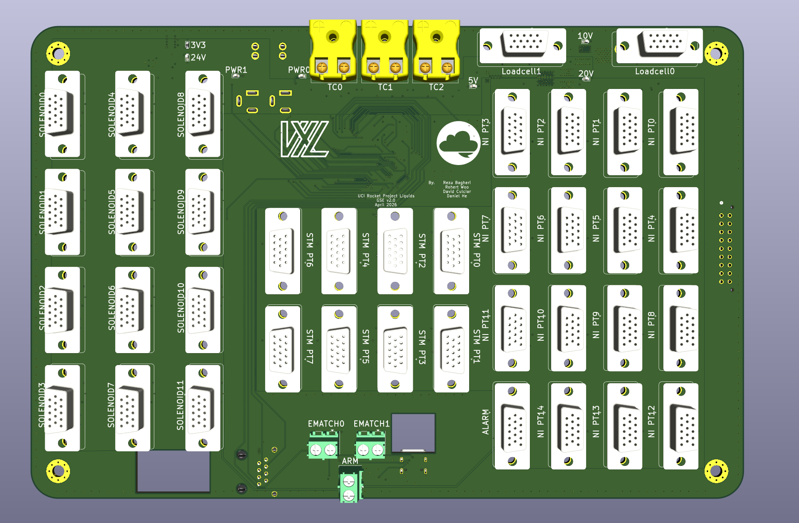

GSE Docs
System Overview
For MOCH4, the GSE (Ground Support Equipment) PCB is the heart of ground testing. Responsible for comprehensive sensor data acquisition, ignition, and valve actuation. It consists of 5 high-level functional subsystems: power, sensing, compute, actuation, and communications.
Stakeholders:
- AV - Hardware: Responsible for layout of the 4-layer stackup. Refer to for GSE PCB design justifications.
- AV - Software: Responsible for firmware, including sensing, control, and failsafe behavior. Refer to GSE behavior justifications.
- Propulsion: Valve actuation (GN2 Fill, Vent, and MVAS), Sensor calibration
- Launch Vehicle: Mounting specifications, Fitment constraints, Connector access, and Harnessing.

Quick Specifications
| Parameter | Value | Requirement Reference |
|---|---|---|
| Input Voltage | 24V DC | ECU requirement |
| Logic Level | 3.3V | STM32 Standard |
| Mounting Pattern | 4x M4 holes with 4.3mm clearance | Avionics |
| Dimensions | 257mm x 171mm | AV Bay Requirement |
Architecture at a glance
Layout at a glance
- 4 Layer Stackup: (placeholder for chart)
- Integrated Connectors: AM-K-PCB, Barrel Jack, DSUB, RJ45, USB-C, Barrel Jack
- Component Partitions: Power, Signal, and GND
- Debugger Accessibility: ARM SWD (Serial Wire Debug)